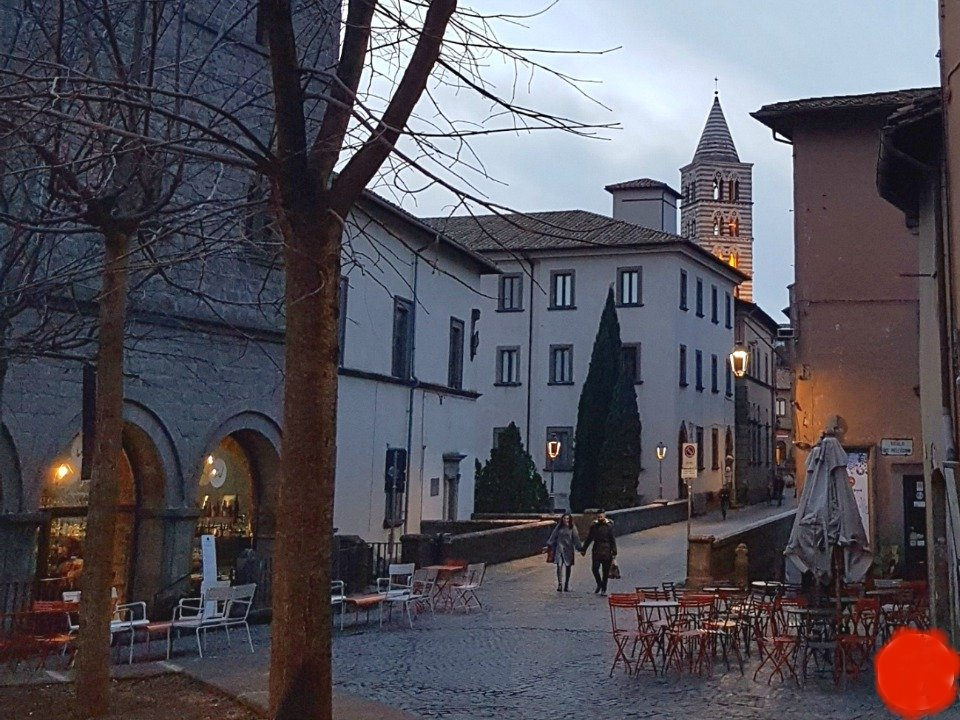
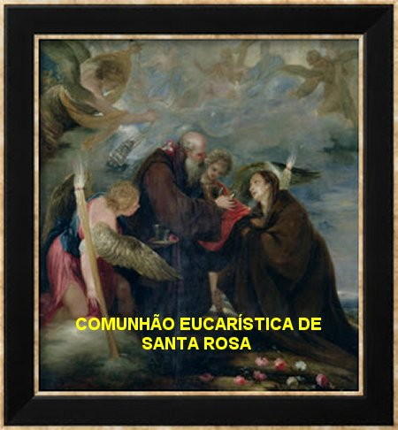
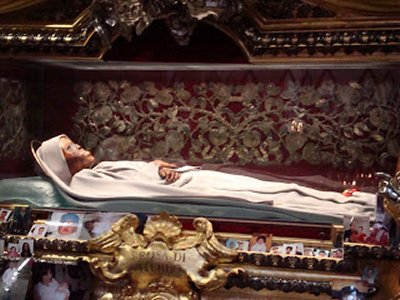
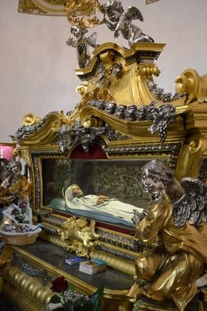
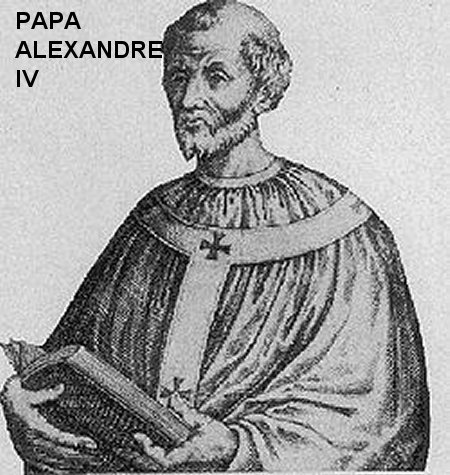
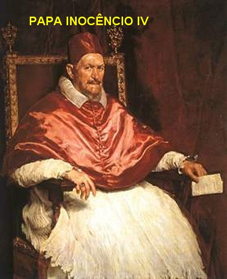
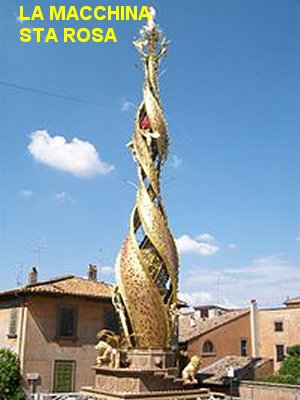
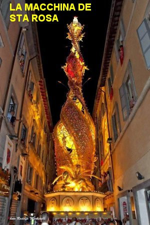
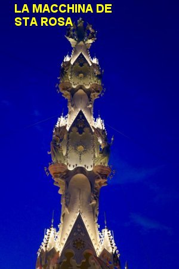

“CUMPRIU A ORDEM DA MÃE”
FINAL DA MISSÃO

Tendo realizado com amor e dedicação o que a SANTÍSSIMA VIRGEM MARIA lhe havia confiado, Rosa não desejou continuar com suas pregações e andanças pela cidade. Decidiu visitar o Convento das Irmãs Clarissa em São Damião, próximo a residência de seus pais. Este Convento era denominado em honra de Santa Maria das Rosas. Acontece que a Superiora do Convento não aceitou e não concordou com a entrada dela na Comunidade Religiosa, dando diversos pretextos, que efetivamente não tinham fundamento imperioso para uma formal negativa. Rosa ficou desapontada, mas em silêncio ouviu a argumentação da Madre que considerava a sua presença como sendo “uma perigosa visionária, que poderia perturbar a paz da Comunidade Religiosa com suas idéias e loucuras”. Com relação ao argumento da Madre, surgiram diversas especulações de que a negativa dela aconteceu, porque a jovem Rosa não apresentou nenhum “dote”; seus pais eram muito pobres.
Rosa não insistiu, com grande simplicidade e modéstia, olhando bem nos olhos da Madre, falou: “A senhora fundamentada em suas razões, não quer me receber agora! Tudo bem. Todavia saiba a senhora, que chegará o momento oportuno em que sorridente e repleta de alegria, me aceitará na Comunidade Religiosa”. Respeitosamente deu dois passos atrás, fez uma reverência e saiu.
JUNTO COM OS PAIS

Resignada, Rosa decidiu passar o resto da vida, na sua residência, junto aos seus pais. Sem sombras de ressentimento ou com qualquer mágoa. Consolava-se recordando que rejeições muito mais incisivas, acompanhadas de padecimentos morais sofridos em grau muito mais elevado, porque também seguidos de agressões covardes e de terríveis sofrimentos físicos, aconteceu com ELE... Com o seu e nosso querido e amado JESUS, que sofreu tudo isso, e morreu pregado numa Cruz, em benefício da salvação eterna de todos nós.
Rosa transformou o seu quarto numa cela de religiosa, e impôs a si mesma um severo silêncio, ocupando-se apenas com as coisas de DEUS, perfeitamente consciente de que a sua missão havia terminado. Passou seus últimos sete anos de vida, rezando em seu beneficio, pela saúde de seus pais, e somente sendo interrompida por pessoas piedosas que vinham lhe pedir conselhos e também rezar na sua companhia.
Com uma fé imensa, de dimensão incalculável, Rosa se aplicou decididamente e exclusivamente às orações, ao jejum e as mortificações. Suplicava ao SENHOR DEUS e a SANTÍSSIMA VIRGEM MÃE, a conversão da humanidade, com um maior e melhor entendimento entre as pessoas, um honesto e perfeito conhecimento da verdade cristã, além de um decidido exercício da misericórdia e da piedade em benefício dos mais pobres e dos menos favorecidos.
MORTE DE ROSA
Aquele especial Anjo de Viterbo, depois de vários meses no seu convento residencial, mas com a saúde sempre frágil, foi acometida de séria enfermidade quando tinha 18 anos de idade. Confessou e recebeu o Sagrado Viático com imensa piedade e finalmente, entregou a sua alma ao SENHOR DEUS. Faleceu no dia 6 de Março de 1251. Seu corpo foi sepultado no Cemitério da Paróquia Santa Maria em Poggio.



Por três vezes o Papa Alexandre IV, em Roma, sonhou com ela, que lhe pedia em nome de DEUS, que ele mesmo, o Sumo Pontífice, transladasse os seus restos mortais para o Convento Santa Maria das Rosas em Viterbo. O Papa Alexandre IV encarregou-se pessoalmente desta missão, deslocando-se para Viterbo. Isto aconteceu sete anos depois dos sonhos, no dia 4 de Setembro de 1258, o Papa Alexandre IV transladou os restos mortais de Rosa solenemente, para o Convento de São Damião. Assim, confirmava pela Vontade DIVINA, aquele anúncio feito por ela mesma a Madre, que não permitiu que ela se tornasse uma Religiosa naquele Convento. Rosa acertara mais uma vez – “As religiosas daquele convento receberam os seus restos mortais como um verdadeiro tesouro”.
CANONIZAÇÃO DE ROSA

No dia 25 de Novembro de 1252, o Papa Inocêncio IV, através da sua Bula “Sic In Sanctis”, mandou instaurar oficialmente o processo de Canonização de Rosa. Em 1257, por ordem do Papa, os restos mortais de Rosa foram exumados no dia 4 de Setembro, e para surpresa geral, o corpo da jovem foi encontrado intacto, praticamente como se ela estivesse viva. O Papa Eugênio IV, e principalmente Calixto III, mandaram continuar o Processo de Canonização. Em 1457 o processo ficou pronto, mas Calixto III morreu sem que chegasse a promulgar o decreto de canonização. Curiosamente, a Canonização de Rosa ficou encerrada. Nunca foi oficializada. Mas também nunca foi negada pelo Papa e pela Igreja.
No martiriológio romano mesmo não tendo chegado a termo o seu processo de canonização, ela se encontra registrada no mesmo. No novo Calendário Litúrgico da Igreja Católica, que foi reformado depois do Concílio Vaticano II, o dia Comemorativo de Santa Rosa foi transferido para a data da sua morte, dia 4 de Setembro.
O seu corpo incorrupto e flexível está no SANTUÁRIO DI SANTA ROSA, em Viterbo. No dia 4 de Setembro anualmente acontece a Festa da Transladação, sempre com grande multidão de fiéis realizando o transporte da “Macchina de Santa Rosa” pelos “Facchini” (denominação italiana dos simpatizantes e fervorosos fiéis da Santa).
A “Macchina de Santa Rosa” é uma armação de ferro e metal, apresentando motivos religiosos e artisticamente pintada. Tem um peso aproximado de 33 toneladas, numa altura de 22 metros aproximadamente. É utilizada na procissão religiosa comemorativa da Festa da Transladação do Corpo de Santa Rosa, do Cemitério da Paróquia de Santa Maria em Poggio para o Convento de São Damião, em Viterbo, no dia 4 de Setembro. A "Macchina" é transportada por cerca de cem homens fortes, numa imensa demonstração de piedade, fé e amor. O desenho da "Macchina" é modificado de dois em dois anos, e as vezes, de 3 em 3.



Em Setembro de 1929, o Papa Pio XI declarou Santa Rosa padroeira da Juventude Feminina da Ação Católica Italiana. Também a Santa foi escolhida para ser a padroeira da JUFRA DO BRASIL, (Juventude Franciscana do Brasil) e sua festa litúrgica é no dia 6 de Março, data da sua morte, mas também é lembrada e comemorada no dia 4 de Setembro, dia do translado do corpo para o Mosteiro das Clarissa de Santa Rosa de Viterbo. É também padroeira dos jovens Franciscanos Seculares.